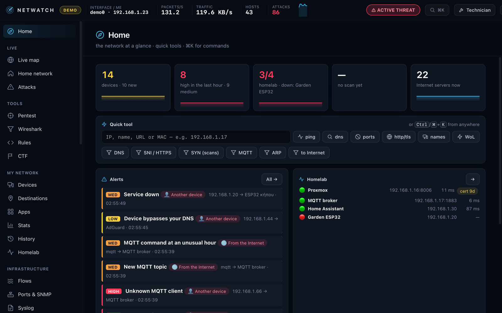
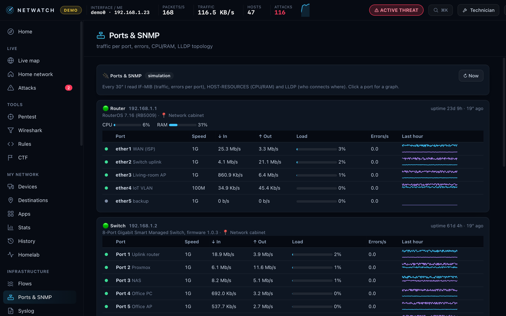
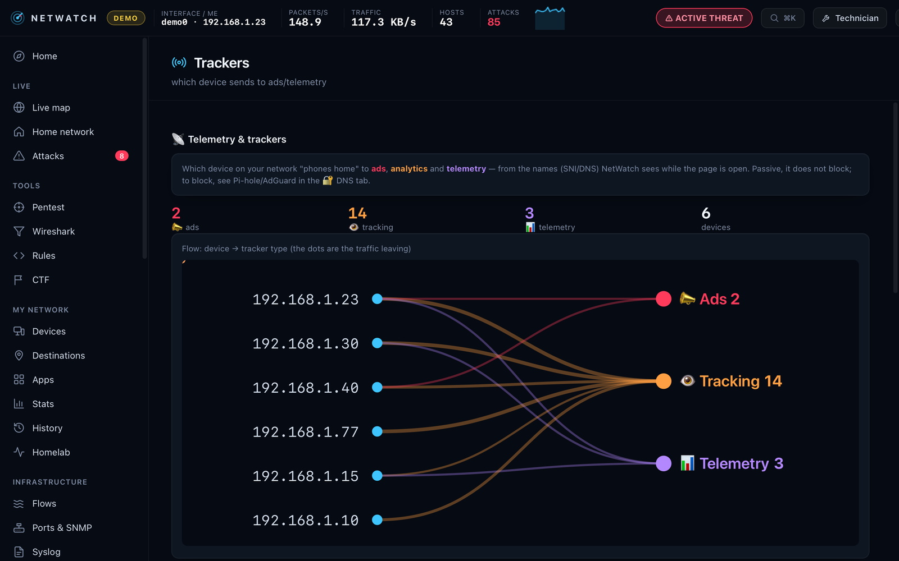
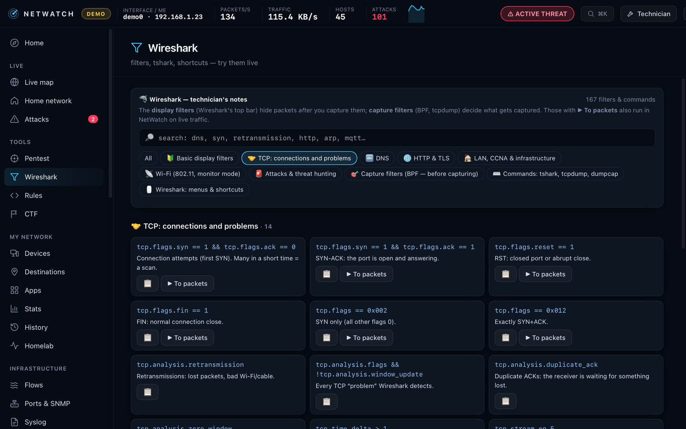
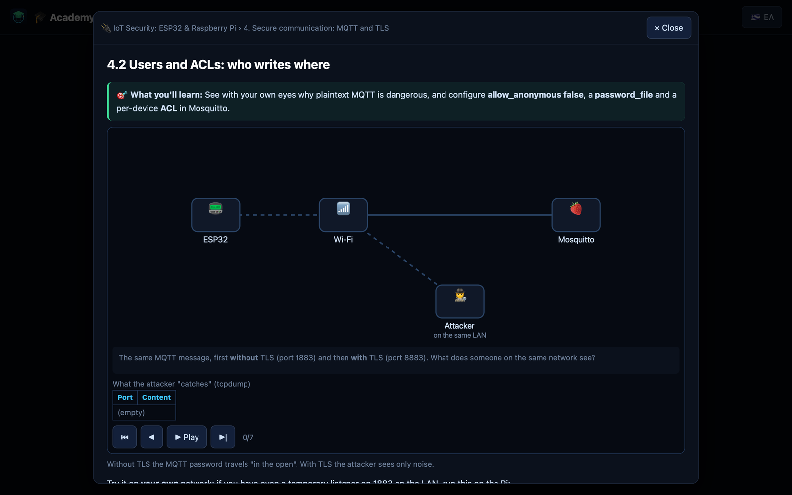
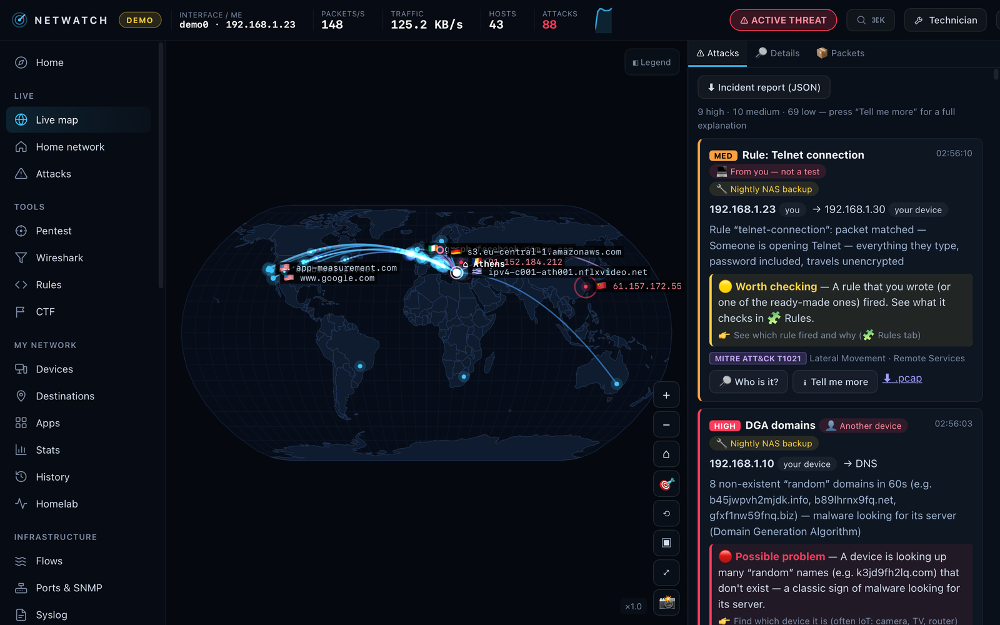

Παθητικός επόπτης δικτύου και σύστημα ανίχνευσης εισβολών για το σπίτι και το μικρό γραφείο. Χάρτης συσκευών, ειδοποιήσεις, ευπάθειες και ιδιωτικότητα — αμυντικό, μόνο ανάγνωση.

Ακούει παθητικά την κίνηση και σου εξηγεί με απλά λόγια τι συμβαίνει — χωρίς να πειράζει καμία συσκευή.
ARP spoofing, σαρώσεις, rogue DHCP, beaconing/C2, παράκαμψη DNS — με εξήγηση «γιατί χτύπησε».
Ποιος είναι συνδεδεμένος, με ονόματα και κατασκευαστή, και πού καταλήγει η κίνησή του.
Η λίστα CISA KEV ματσαρισμένη τοπικά στις δικές σου συσκευές, με βαθμό EPSS.
Trackers και ACR έξυπνων TV που «καλούν σπίτι» — τι μαθαίνει για σένα η τηλεόρασή σου.
Αυτόματο σχέδιο με ένα κουμπί, με επαγγελματικά σύμβολα — εξαγωγή σε draw.io και PDF.
CCNA 200-301 και IoT security στα ελληνικά: μαθήματα, κουίζ, Cisco CLI, subnetting.
Ping, DNS, θύρες, Wireshark φίλτρα, έλεγχος TLS/SSH, «πού είναι συνδεδεμένο».
Τρέξε το σε Raspberry Pi/Docker· σύνδεσε ESP32 αισθητήρες με σύζευξη QR.
Όλες οι εικόνες από τη λειτουργία demo (προσομοιωμένη κίνηση).





Δωρεάν και ανοιχτού κώδικα. Διάλεξε πλατφόρμα — ή δοκίμασέ το πρώτα στο demo.
Το Windows app δεν είναι ακόμη code-signed (το SmartScreen ρωτά μία φορά → «More info → Run anyway»). Το macOS app είναι ad-hoc signed (πρώτη φορά: δεξί κλικ → Άνοιγμα). Κάθε έκδοση έχει SHA256SUMS για επαλήθευση.